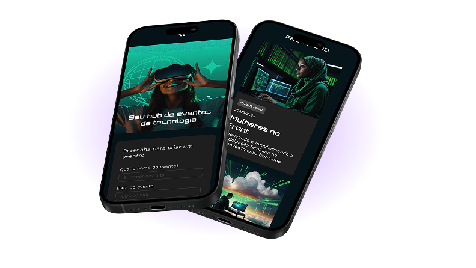
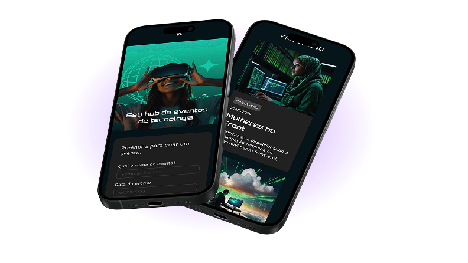

Fique de olho
no que importa
Monitoramento em tempo real com alertas inteligentes para sua aplicação nunca sair do ar sem você saber.
Testar versão demo 
Monitoramento em tempo real com alertas inteligentes para sua aplicação nunca sair do ar sem você saber.
Testar versão demo 